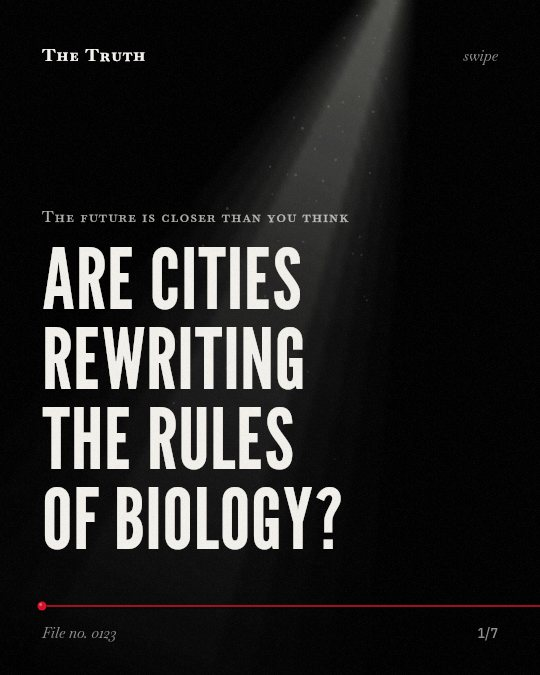

The future is closer than you think
Are cities rewriting the rules of biology?

Urban environments drive rapid adaptive phenotypic change.
Species in cities are physically changing to survive human-made conditions. This evolution happens quickly.
Established. Several studies combined, or official data. The evidence is mixed.
What the research found
Urban populations experience parallel directional selection or urban invaders experience environmental filtering by common urban conditions that favour certain behavioural types.
“These patterns suggest that urban populations experience parallel directional selection or that urban invaders experience environmental filtering by common urban conditions that favour certain behavioural types.”
Meta-analysis, 2026. Burkhard et al., The Journal of animal ecology.
Anthropogenic changes in sodium availability can affect the development of traits in roadside-feeding herbivores.
“Taken together, our results show that anthropogenic changes in sodium availability can affect the development of traits in roadside-feeding herbivores.”
Experiment, 2014. Snell‐Rood et al., Proceedings of the National Academy of Sciences.
Anthropogenic fires are shaping the evolution of seed traits such as pubescence and shape.
“We show that anthropogenic fires are shaping the evolution of seed traits such as pubescence and shape.”
Study, 2011. Gómez‐González et al., Proceedings of the National Academy of Sciences.
Urbanization causes rapid and substantial adaptive phenotypic change in wild populations.
“Urbanization causes fundamental changes to natural environments, causing rapid and substantial adaptive phenotypic change in wild populations.”
Meta-analysis, 2026. Burkhard et al., The Journal of animal ecology.
The altered expression of song components under noise exposure leads to increased phenotypic integration, which is linked with reduced song complexity.
“Thus, the altered expression of song components under noise exposure leads to increased phenotypic integration, which is linked with reduced song complexity.”
Experiment, 2012. Montague et al., Behavioral Ecology.
Variance in implemented management actions shapes the strength and rate of phenotypic and evolutionary change.
“We emphasize that variance in implemented management actions shapes the strength and rate of phenotypic and evolutionary change.”
Study, 2020. Schell et al., Evolutionary Applications.
Human factors shape the pace of change.
Human actions like fire, noise, and nutrient availability dictate how species adapt. Management strategies also determine the strength of these evolutionary shifts.
The city is a laboratory of evolution.
That may be why wildlife and plants are shifting so fast. Your presence creates a selective pressure that rewrites the biological rules of the environment.
This part is our reading of the evidence, not a finding.
A bird sings through city traffic.
You hear a bird near a highway. It adjusts its song to be heard over the roar of engines. Its complexity changes to fit the noise.
The honest summary
The evidence confirms that urban environments drive rapid evolutionary and phenotypic changes in various species, but it does not specifically isolate stress tolerance or sensory processing as the primary drivers.
The research is limited by taxonomic biases and methodological heterogeneity, and many findings are specific to plants, invertebrates, or birds rather than humans.
What will you leave behind in the environment?
Sources
- Mary J. Montague, Marine Danek-Gontard, Hansjoerg P. Kunc (2012). Phenotypic plasticity affects the response of a sexually selected trait to anthropogenic noise. Behavioral Ecology. Experiment, cited 92 times.
- Emilie C. Snell‐Rood, Anne E. Espeset, Christopher J. Boser et al. (2014). Anthropogenic changes in sodium affect neural and muscle development in butterflies. Proceedings of the National Academy of Sciences. Experiment, cited 97 times.
- Susana Gómez‐González, Cristian Torres‐Díaz, Carlos Bustos-Schindler et al. (2011). Anthropogenic fire drives the evolution of seed traits. Proceedings of the National Academy of Sciences. Study, cited 95 times.
- Christopher J. Schell, Lauren A. Stanton, Julie K. Young et al. (2020). The evolutionary consequences of human–wildlife conflict in cities. Evolutionary Applications. Study, cited 216 times.
- Burkhard TT, Dochtermann NA, Charmantier A (2026). Global meta-analysis reveals urban-associated behavioural differences among wild populations. The Journal of animal ecology. Meta-analysis, cited 2 times.
Also read for this file, not quoted
- Caruso et al. (2018). A meta‐analysis of the agents of selection on floral traits.
This file was researched and drafted by software, then checked by rules a model cannot talk its way around: each quote above was matched word for word against the paper, and every number had to appear in it. How files are made.